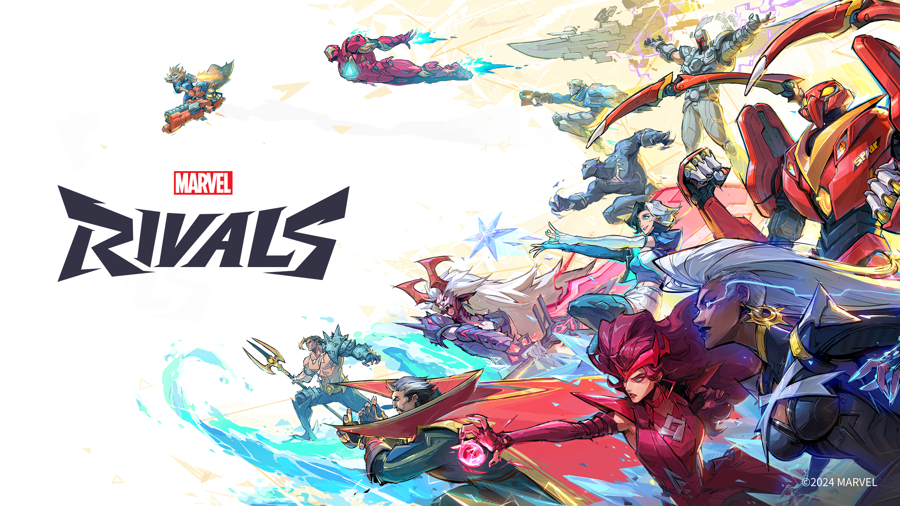
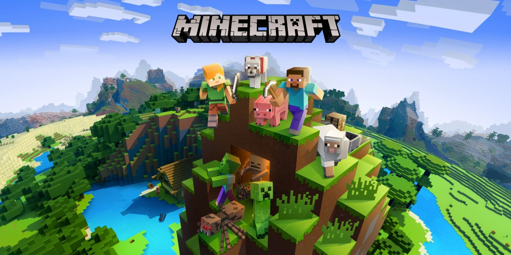
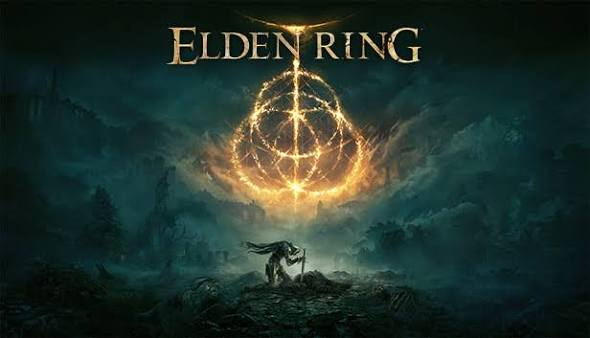
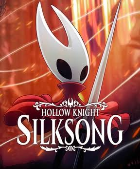
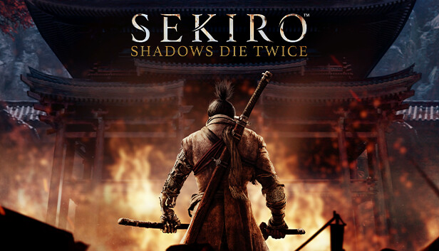

Video Games! 🎮🕹️
Video games have been my hobby for as long as I can remember! I've made friends and met wonderful people through them, and we've created great memories and funny moments together. Gaming is also my safe place to relax and have fun.
I enjoy a range of genres, including FPS (first-person shooters), RPG (role-playing games), Soulslikes, and auto chess strategy games. My favorite is Soulslikes, such as Elden Ring, Silksong, Hollow Knight, Sekiro, and Dark Souls 3.



What draws me in is how immersive their worlds are. Every area feels like it has a history and the story isn't handed to you all at once. You piece it together through the environment and the characters you meet. Each game is uniquely designed with great attention to detail. Even the smallest details, the onces you might easily miss, feel rewarding once you notice them, because they show how much thought the developer put into the game.
Additionally, each games has its own learning curve. However, it is incredibly satisfying once you get a grasp of the mechanics and start facing challenges in the games, whether that means figuring out how to beat a tough boss or discovering a better way to play.



For me, a great game gives you a world worth getting lost in and have fun! I hope that joining a video games community or start playing that you will make great memories and new friends as well!